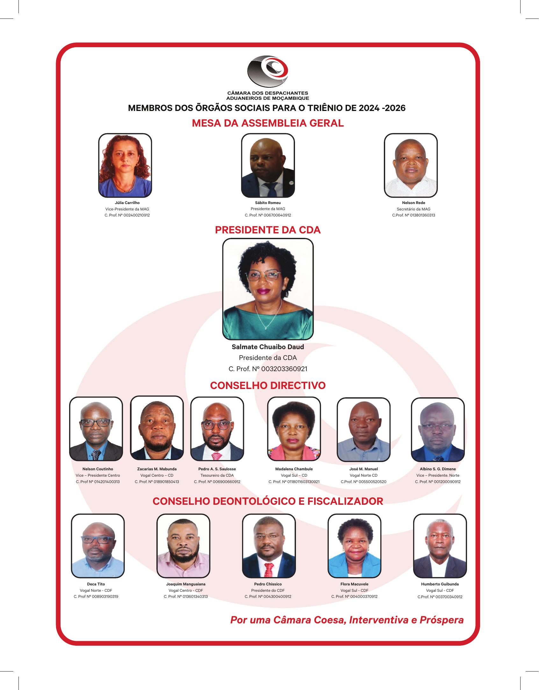

Quem somos, missão, valores, órgãos sociais e a história da Câmara dos Despachantes Aduaneiros de Moçambique.
A CDA é uma instituição de direito público, criada pela Lei n.º 4/2011, de 11 de Janeiro, que representa os despachantes aduaneiros de Moçambique.
A Câmara dos Despachantes Aduaneiros de Moçambique (CDA) é uma instituição de direito público, criada pela Lei n.º 4/2011, de 11 de Janeiro, representativa dos despachantes aduaneiros que exercem a actividade de despacho de mercadorias. A constituição da Câmara e a eleição dos seus primeiros órgãos sociais ocorreram em Setembro de 2011.
O despachante aduaneiro é o profissional que representa, em nome e por conta de outrem, os interesses dos operadores junto das autoridades aduaneiras, praticando todos os actos e formalidades relacionados com o desembaraço aduaneiro de mercadorias.
Compete à CDAA CDA está sujeita à tutela do Ministério das Finanças, cabendo à Direcção Geral das Alfândegas a fiscalização e o licenciamento da actividade de despachante aduaneiro.
Eleitos na XXVI.ª Sessão da Assembleia Geral Ordinária, em Dezembro de 2023, e empossados para o triénio 2024–2026.

Por uma Câmara Coesa, Interventiva e Próspera
O processo de criação da Câmara dos Despachantes Aduaneiros de Moçambique teve o seu início em Novembro de 1996, quando existiam apenas 10 despachantes oficiais em Moçambique. A falta de experiência sobre a forma de criar a CDA, conjugada com algumas preocupações encontradas pelo caminho, fez com que o processo fosse temporariamente paralisado até à criação da Autoridade Tributária de Moçambique, em 2006, período em que voltou a receber um impulso quando o Exmo. Sr. Presidente da AT nomeou uma "Comissão Ad-hoc" para se encarregar de apresentar o dossier com o projecto de criação da CDA à Autoridade Tributária, que por sua vez o encaminharia para as autoridades competentes, com vista à sua aprovação.
Depois da 2.ª Sessão do Conselho da Fiscalidade, em 2007, o projecto foi aprovado e recomendado o aprofundamento do seu conteúdo. Em Setembro de 2010, numa reunião para a divulgação da Janela Única Electrónica (JUE), a Comissão Ad-hoc deu a conhecer aos despachantes aduaneiros os desenvolvimentos do processo de criação da CDA, tendo sido nomeados despachantes das zonas Centro e Norte para estabelecer mecanismos de coesão com os despachantes aduaneiros residentes nessas regiões.
A CDA foi criada pela Lei n.º 4/2011, de 11 de Janeiro, e os seus primeiros órgãos sociais foram eleitos em Setembro de 2011. Desde então, a instituição tem representado a classe, promovido o aperfeiçoamento profissional e participado activamente nas estruturas internacionais, nomeadamente no âmbito da ASAPRA (Associação Internacional de Agentes Profissionais de Alfândega) e da FIATA.
Vice-presidente: Albino Sebastião Grumor Dimene.
Vice-presidente: Nelson Caetano Coutinho Luís.
Escritórios na Beira.
Sede nacional em Maputo — Rua João Carlos Raposo Beirão, n.º 508, R/C.